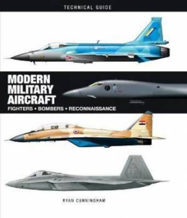

Research Project (Gaze-based driver situational awareness)
Honours capstone on gaze-based driver situational awareness:
combining attention with a dynamic knowledge graph, object detection and segmentation,
and vision-language models to reason about an urban scene rather than only list objects.
Designed the pipeline, evaluated it against driving/SA needs, and wrote it up as a research paper.
Further work from the project was accepted to a conference.
Designed and reasoned about distributed ledgers and smart contracts:
how state is agreed, recorded and enforced without a single operator.
Worked from architecture through Solidity-style contracts to real use cases—provenance, access control and audit—rather than treating blockchain as only cryptocurrency.
Ran an engineering concept through a full systems-engineering loop:
stakeholders, business case, ConOps, requirements, concepts, trade studies, then design, test and verification.
Worked in a team the way industry does.
Took C from simple programs to real-time work on microcontrollers.
Used an RTOS to schedule sensing, control and communication, and drove peripherals and serial links under timing constraints.
Built systems that have to run on the metal, not only on a desktop OS.
Approached interactive systems from the people who use them.
Used UX methods to study context, model interaction, and evaluate usability and experience.
Designed with cognitive, social and cultural factors in mind so the technology fits the situation, not the other way around.
Built full-stack web systems with HTML, CSS and JavaScript, plus server-side work in Node and Express.
Covered responsive, accessible interfaces, validation, authentication and common web threats.
Treated the web as an architecture—protocols, clients, servers and deployment—not just pages.
Learned how engineering research is designed and judged: questions, literature, methods, ethics, evidence and reporting.
Treated research as professional practice—how to make a claim that holds up, and how findings should change design, not only fill a report.
Wrote software at the operating-system layer: processes, threads, concurrency, memory and files, and talking to hardware without high-level services in the way.
Focused on how real systems manage resources, isolation and communication—not just application code sitting on top of the OS.
Studied how autonomous platforms perceive, plan and navigate in 2D and 3D.
Covered sensors, multisensor fusion, path planning and guidance, and how those pieces close the loop with vehicle control—not isolated algorithms, but a working autonomy stack.
Analysed signals and systems in time and frequency.
Applied Fourier and Laplace transforms, LTI models and filtering to electrical and electronic problems.
Built the habit of moving between domains so later work in communications, control and electronics starts from a clear system model.
Used discrete maths to model computing problems: logic, sets, functions, proofs and graph theory.
Turned messy real-world tasks into cleaner abstractions so algorithms and later work in complexity, cryptography and programming paradigms sit on a precise foundation.
Worked through core AI: intelligent agents, uninformed and informed search (including A*), heuristics, then introductory machine learning and classification.
Used graphs and discrete tools to plan paths and compare algorithms by cost, completeness and optimality—not just whether they found an answer.
Studied how information assets are attacked and protected. Covered confidentiality, integrity, availability, authentication and non-repudiation, plus threats, vulnerabilities, access control, cryptography and network defences.
Framed security as both technical controls and management practice, not only tools.
Built models that learn from data rather than hard-coded rules: supervised and unsupervised methods, feature design, and evaluation.
Applied classification, regression and clustering to real datasets, with attention to generalisation and whether a result would hold beyond the training set.
I’m a final-year engineering student at QUT working where perception systems meet design.
My capstone builds gaze-based situational awareness for driving:
detect and segment an urban scene, then keep it in a dynamic knowledge graph so the system can reason about what still matters after it leaves the frame.
I also prototype blockchain provenance tools for tracking serialised assets through a supply chain.
Outside of study I build military scale models, spend time on gel-blaster setups and games, and volunteer in surf life saving.
Based Gold Coast, Queensland, Australia
Study Computer and Software Engineering, Queensland University of Technology (QUT)
Focus System design and vision systems

Currently reading
Modern Military Aircraft — Ryan Cunningham